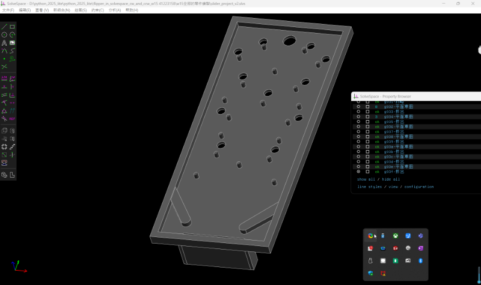

w14 <<
Previous Next >> 練習圖影片
w15
flipper 零件從 62mm 轉入 CoppeliaSim 場景後成為 62cm, 尺寸計放大 10 倍, 因此整體彈珠台也將從 56cm x 130cm 放大到 560cm x 130cm, 也就是 CoppeliaSim 中檯體面板的尺寸設為 5.6m x 13m, 使得原先的地板 5m x 5m 過小, 因此選擇刪除原先的內建 Floor, 改用 infrastructure - floor 中的 infiniteFloor 模型.彈珠檯面板 - 560cm x 130cm 厚度 15cm, 在 Solvespace 中以 560mm x 130mm x 15mm 繪圖, 轉入模擬場景時採 z 軸向上, Scaling 為 0.01, 表示尺寸放大 10 倍。
1.solvespace的彈珠台繪製
(1)下載檔案 : /downloads/flipper_in_solvespace_cw_and_ccw_w15 41223158.7z
(2)stl下載檔案 : /downloads/stl.7z
(3)影片觀賞 :



2.CoppeliaSim的彈珠台繪製
(1)下載檔案 : /downloads/CoppeliaSim.7z
(2)影片觀賞 :


3.stl零件模組
Model Color: Back Color1: Back Color2:
Render Mode:Definition:
4.心得及組員狀況
我的畫圖心得感想是再遇到不會的時候，都是參考同學的作品然後自由發揮比較多，雖然沒有別組那麼團結完成，也沒有組員有人帶，但是我的想法就是一步一步慢慢來，畫圖時也是出了很多的誤差來更改，並自己組裝起來，不會就是借鑒別組來自己研究，設計出理想中的彈珠台。
這次的成果幾乎是我負責的，因為隊友41223157進度跟不上導致我們成果的生出有困難，並且隊友學習態度不積極。 像是我在做的時候，看到他的狀況不是很好，所以他有不懂的地方我假日都請他詢問我，但都不願意問。且他的態度讓我的感覺是心沒有在電輔方面，還請老師見諒。
w14 <<
Previous Next >> 練習圖影片